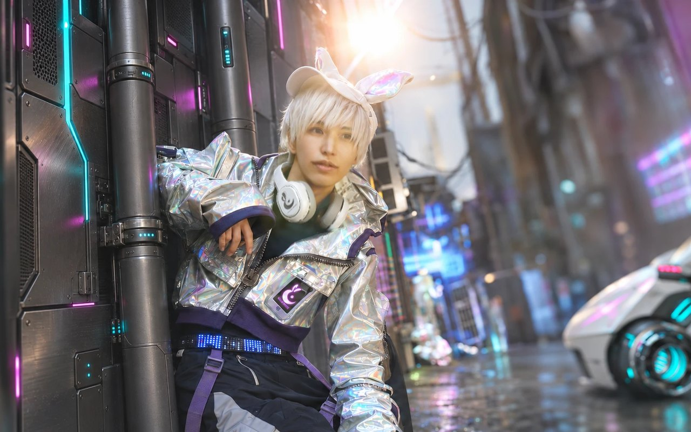
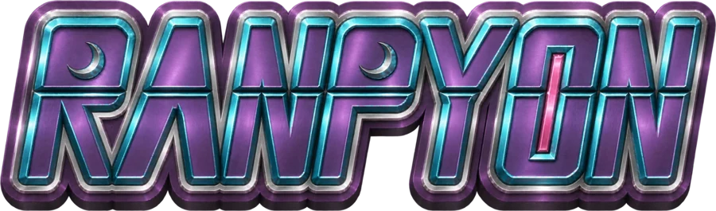

MOONIAN / 01ツッコミ担当RANPYON
らんぴょん ✧
地球人とムーニアンのハーフ。
自分の「好き」を形にする、クリエイターなツッコミ担当。
- BIRTHDAY
- 7月21日
- CREATE
- 造形・3DCG・映像・デザイン
らんぴょんをもっと知る ＋
好きなこと・得意なこと
こんな人
完璧主義者で、スーパーポジティブ。ちょっと変わり者で、超幸運人間。頑固で、負けず嫌いな一面も。
お笑いの原点
憧れの芸人は、もう中学生さん。もう中学生さんのネタにインスパイアされて、自分でもネタを作るように。
「もう中学生さんと一緒に仕事がしたい」という思いが、NSCに入学したきっかけです。
地球でのプロフィール
吉本興業所属・東京NSC27期。阿波弁と関西弁を交えた言葉で、地球のみんなと交流しています。
吉本公式プロフィール ↗